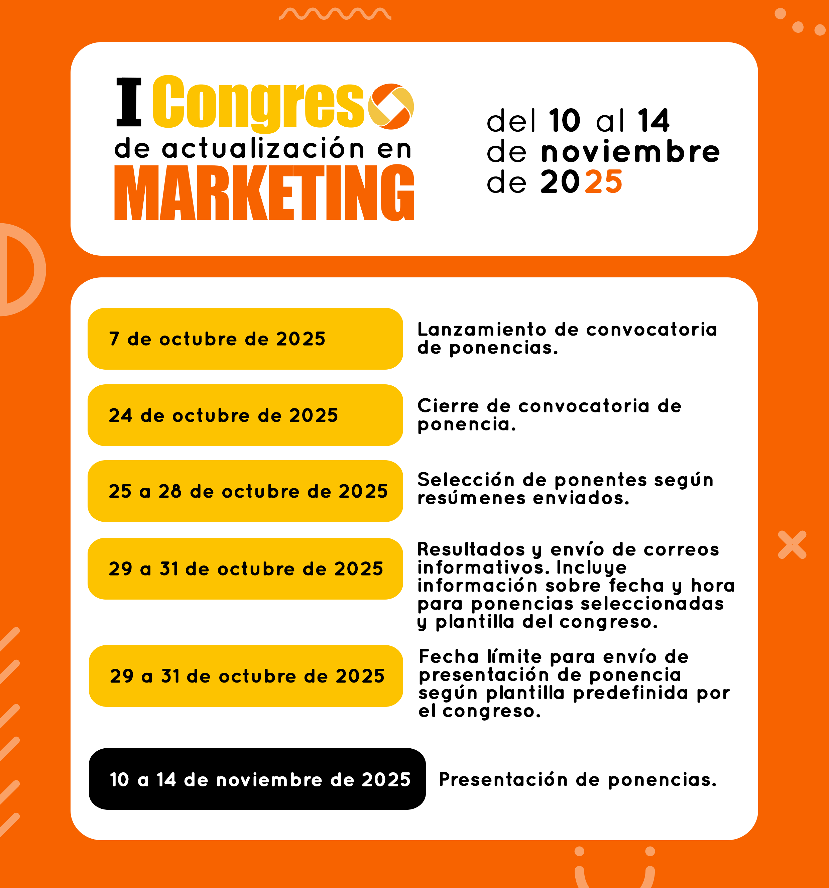

En el marco de la IV Semana del Marketing Mix Week - Centro de Gestión de Mercados, Logística y Tecnologías de la Información - CGMLTI (SENA) se realizará el I Congreso de Actualización en Marketing que invita a descubrir cómo esta disciplina ha evolucionado y continúa transformándose frente a los retos sociales, culturales y tecnológicos de nuestro tiempo.
Acercar a los participantes del congreso a una comprensión integral y en evolución del marketing, desde su carácter multidimensional e interdisciplinar propiciando una reflexión crítica sobre los retos y oportunidades que plantea para la formación académica, la investigación y la gestión empresarial y social en contextos diversos.
Dirigido a: Investigadores, docentes, estudiantes y profesionales del área de marketing y afines.
Fechas: 10 al 14 de noviembre
Modalidad: Presencial y virtual
Participación: Como asistente o ponente
Explora la agenda completa del congreso
Haz clic para ver la agenda completa.
| Hora | Conferencia | Conferencista | Grabaciones |
|---|---|---|---|
| 08:50 | Marketing: una disciplina en transformación | Freddy Urrea Urrea, Reina Helena Rodriguez Hernandez, Judy Natalia Peña Duarte y Luz Dary López Cardona | Ver Conferencia |
| 10:30 | Ciberseguridad como factor de competitividad en el marketing, riesgos y perspectivas | Arthur Diaz Ortiz | Ver Conferencia |
| 11:45 | transformación del Marketing Digital: La era de la Inteligencia Artificial y los Datos | Tatiana Ramirez | Ver Conferencia |
Haz clic para ver la agenda completa.
| Hora | Conferencia | Conferencista | Grabaciones |
|---|---|---|---|
| 13:00 | Del Impulso a la Decisión: el poder oculto del Neuromarketing | Juan Sebastian Hoyos Perez y Julio Alberto Figueroa | Ver Conferencia |
| 14:20 | Como contar historias poderosas en tiempos de Inteligencia Artificial | Vladimir Clavijo Galdino | Ver Conferencia |
| 15:50 | Metodología enactiva para la construccion de marca territorial comunitaria | Claudia Margarita Mejia | Ver Conferencia |
| 17:10 | ¿A qué huele el Marketing? | Dora Forero Pérez | Ver Conferencia |
Haz clic para ver la agenda completa.
| Hora | Conferencia | Conferencista | Grabaciones |
|---|---|---|---|
| 08:00 | Del Contacto al conocimiento: cómo la IA transforma el mundo BPO | John A. Quemba G. | Ver Conferencia |
| 09:45 | Gestion correcta para la atención al cliente | Dario Esteban Parra Perilla | Ver Conferencia |
| 10:45 | Innovación comercial como base para la competitividad | Wilson Garzón Morales | Ver Conferencia |
| 12:15 | Analítica de datos. Brújulas para los emprendimientos | Christian Camilo Tiria Buitrago | Ver Conferencia |
| 14:00 | ¿Me atiende un humano o un robot? | Maria Carolina Arrieta Ariza | Ver Conferencia |
| 15:45 | Cadena de Valor y Marketing Sostenible: Eficiencia e innovación en el Reciclaje de llantas en Villavicencio | Claudia Patricia Ramirez Ávila y Edwin Gregorio Yepes González | Ver Conferencia |
Haz clic para ver la agenda completa.
| Hora | Conferencia | Conferencista | Grabaciones |
|---|---|---|---|
| 18:30 | ¿Cómo ser influencer y no fracasar en el intento? | Angélica Maria Paz Otavo | Ver Conferencia |
| 20:30 | Más allá del sol y la playa: Rebranding en destinos turísticos. Caso: Acapulco, México | Erick García Serna | Ver Conferencia |
Esta línea busca revisar cómo ha cambiado el marketing a lo largo de más de un siglo, pasando de un enfoque centrado en el producto y la transacción a uno que integra dimensiones sociales, digitales y holísticas. El propósito es que los ponentes expliquen los hitos, rupturas y continuidades que han marcado esta evolución, destacando ejemplos que muestren cómo las organizaciones y la academia han reconfigurado su manera de entender el marketing.
Se refiere al surgimiento del marketing como disciplina en el siglo XX, con la formulación del marketing mix (4P’s: producto, precio, plaza, promoción). Aquí se analiza cómo se concibió inicialmente el marketing como una herramienta para organizar la oferta y la demanda dentro de los mercados.
Temas clave:
A partir de los años 80, el marketing incorpora la noción de cliente como centro de la estrategia. Se pasa de “vender productos” a “construir valor y relaciones de largo plazo.
Temas clave:
Surge la necesidad de que las prácticas de marketing también contemplen el bienestar de la sociedad y el planeta. El consumidor ya no solo compra productos, sino que espera responsabilidad y ética.
Temas clave:
Kotler y Keller proponen que el marketing debe entenderse de manera integral, donde “todo importa”. Incluye marketing interno, integrado, relacional y socialmente responsable.
Temas clave:
El marketing entra en la era digital, con big data, IA, omnicanalidad y experiencias inmersivas. Esto redefine la relación con los clientes y exige un cambio radical en la forma de diseñar estrategias.
Temas clave:
Esta línea busca mostrar cómo el marketing, al diversificarse, ha dado lugar a ramas o vertientes que responden a realidades específicas: sociales, culturales, tecnológicas, territoriales, políticas, turísticas, deportivas entre otras. El propósito es que los ponentes presenten estudios de caso, experiencias profesionales y propuestas innovadoras que muestren cómo estas ramas se integran bajo el enfoque holístico, evitando la fragmentación y reconociendo su aporte al sistema general del marketing.
Descripción: Se centra en la revolución digital y en cómo ha transformado la forma en que las empresas se relacionan con sus clientes. Incluye redes sociales, IA, big data, automatización y experiencias inmersivas.
Temas clave:
Descripción: Analiza cómo el marketing puede contribuir a cambios de comportamiento, a la equidad y a la sostenibilidad. Es un campo con alto impacto comunitario y social.
Temas clave:
Descripción: Explora cómo el marketing puede fortalecer identidades culturales, promover territorios y dinamizar economías locales. Abarca branding cultural, turismo y patrimonio.
Temas clave:
Descripción: Muestra cómo el marketing se aplica en contextos de alto impacto social: la política y el deporte entre otras opciones. Se centra en cómo se gestionan la imagen, el posicionamiento y las comunidades de seguidores.
Temas clave:
Descripción: Resalta la importancia de generar experiencias memorables y vínculos emocionales entre marcas y consumidores. El marketing ya no se limita a la compra, sino a todo el viaje del cliente.
Temas clave:
Ten en cuenta las siguientes fechas:
Para inscribirte puedes escanear el siguiente código QR:
También puedes dar clic en el botón para ir al formulario de inscripción: